无图
B0FHBMG2B3
3 Way Hose Splitter, Heavy Duty Full Flow Garden Water Hose Bib Spigot...
3-way hose splitter · stainless steel · 1 pack
| 价格带 | Listing | 月销 | 销量占比 | 评论中位 |
|---|---|---|---|---|
| under_15 | 30 | 63,550 | 43.2% | 802 |
| 15_to_25 | 29 | 38,300 | 26.0% | 265 |
| 25_to_40 | 25 | 37,200 | 25.3% | 127 |
| 40_to_60 | 5 | 8,100 | 5.5% | 170 |
| 60_plus | - | - | 0.0% | - |
| 形态 | 数量 | 直接/关键词 | 均价 | 形态月销 | 销量份额 | 评论中位 | 材质 / 套装 |
|---|---|---|---|---|---|---|---|
| 3-way hose splitter需要供应商和评论验证 | 7 | 7/- | $27.36 | 3,200中位 100 | 2.5% | 91 | stainless steel:3; plastic:11:7 |
| garden hose splitter评论门槛低 | 45 | 24/21 | $19.65 | 78,800中位 200 | 61.6% | 209 | plastic:13; stainless steel:12; silicone:11:42; 2:2; 6:1 |
| 2-way hose splitter评论门槛低 | 9 | 4/5 | $22.38 | 12,600中位 200 | 9.8% | 212 | stainless steel:2; silicone:2; plastic:11:7; 2:1; 4:1 |
| hose splitter manifold供给少但需求可见 | 1 | 1/- | $28.49 | 800中位 800 | 0.6% | 473 | -1:1 |
| 4-way hose splitter需要供应商和评论验证 | 1 | 1/- | $44.98 | -中位 - | 0.0% | 19 | plastic:11:1 |
| electric timer供给少但需求可见；评分改良空间 | 1 | -/1 | $29.99 | 10,000中位 10,000 | 7.8% | 36,816 | plastic:11:1 |
| manual timer供给少但需求可见 | 4 | -/4 | $24.97 | 21,400中位 5,500 | 16.7% | 1,089 | plastic:41:4 |
| hose pipe fitting供给少但需求可见 | 1 | -/1 | $14.99 | 900中位 900 | 0.7% | 18,724 | -1:1 |
| outdoor living需要供应商和评论验证 | 1 | -/1 | $12.99 | 200中位 200 | 0.2% | 27 | -1:1 |
| hose connector/adapter需要供应商和评论验证 | 1 | -/1 | $12.99 | 100中位 100 | 0.1% | 149 | -1:1 |
| 形态 / 需求类型 | 主题 | 提及 | 用户 | 场景 | 证据 |
|---|
needs_supplier_quote · system_estimate
缺少证据：supplier quote, MOQ, lead time, packaging, freight, certifications。系统估算只能用于初筛，供应商报价确认前不得视为真实利润。
| ASIN | 形态 | 月销 | Listing 评论 | 已读评论 |
|---|
3-way hose splitter · stainless steel · 1 pack
garden hose splitter · stainless steel · 1 pack
3-way hose splitter · stainless steel · 1 pack
 B0G8YR6G32
ZaakWang Garden Hose Splitter, 3 Way Hose Splitter, Heavy Duty Water Ho...
B0G8YR6G32
ZaakWang Garden Hose Splitter, 3 Way Hose Splitter, Heavy Duty Water Ho...
3-way hose splitter · unknown · 1 pack
garden hose splitter · stainless steel · 1 pack
garden hose splitter · stainless steel · 1 pack
3-way hose splitter · unknown · 1 pack
garden hose splitter · stainless steel · 1 pack
garden hose splitter · plastic · 1 pack
 B0GGN99JP2
RAINPOINT 3 Way Hose Splitter, 100% Metal Heavy Duty Garden Hose Splitt...
B0GGN99JP2
RAINPOINT 3 Way Hose Splitter, 100% Metal Heavy Duty Garden Hose Splitt...
3-way hose splitter · plastic · 1 pack
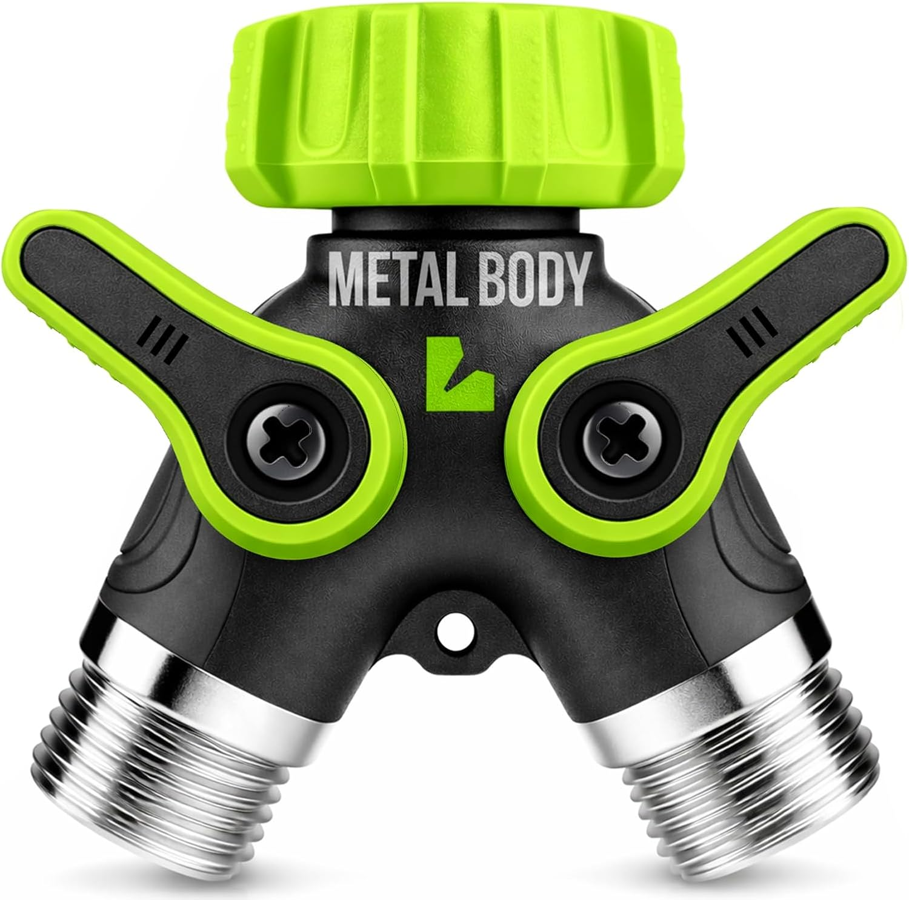
B0F2MJHDSS LIME 2 Way Hose Splitter Heavy Duty - Metal Y Garden Hose Splitter with...2-way hose splitter · stainless steel · 1 pack
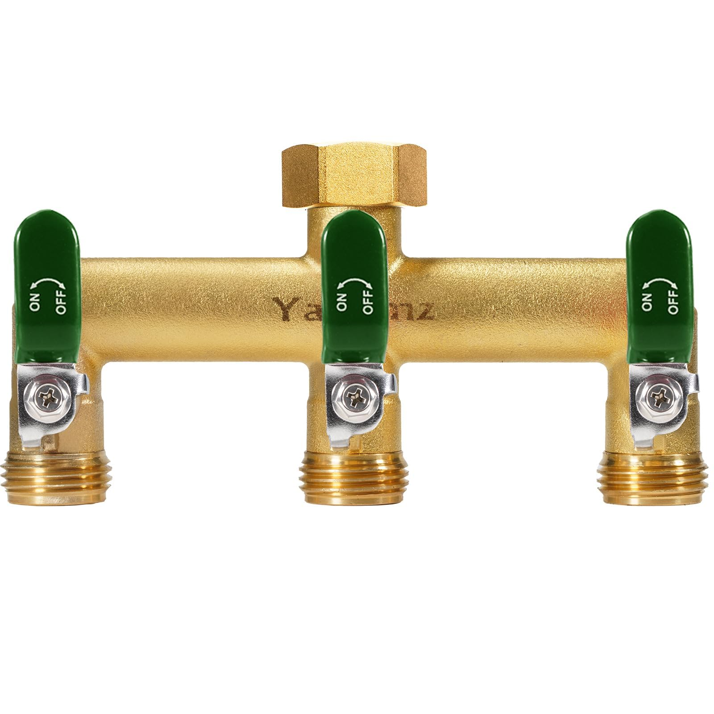
B0DT6VR1MG Yayamz Garden Hose Splitter, 3/4” Rust and Freeze Resistant Outdoor Hos...hose splitter manifold · unknown · 1 pack
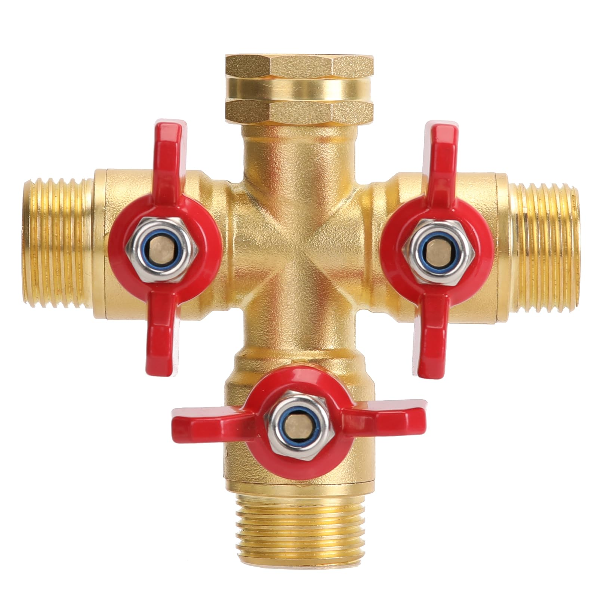
B0DZNG5GLH Garden Hose Splitter 3 Way, Heavy Duty 3-Way Brass Valve Garden Hose Sp...garden hose splitter · stainless steel · 1 pack
 B0GGNF3TF3
RAINPOINT Garden Hose Splitter 2 Way, All Metal Heavy Duty Water Hose Y...
B0GGNF3TF3
RAINPOINT Garden Hose Splitter 2 Way, All Metal Heavy Duty Water Hose Y...
garden hose splitter · plastic · 1 pack
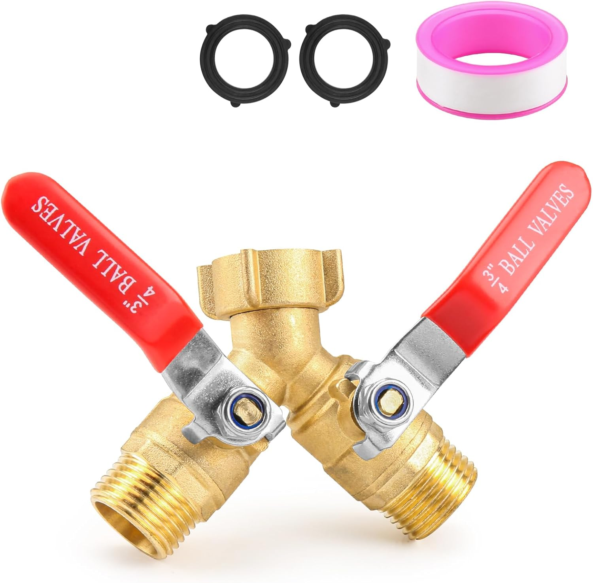
B0F59SJNWW Hose Splitter 2 Way Heavy Duty, 3/4 Inch GHT Thread Y Valve Connector w...garden hose splitter · stainless steel · 1 pack
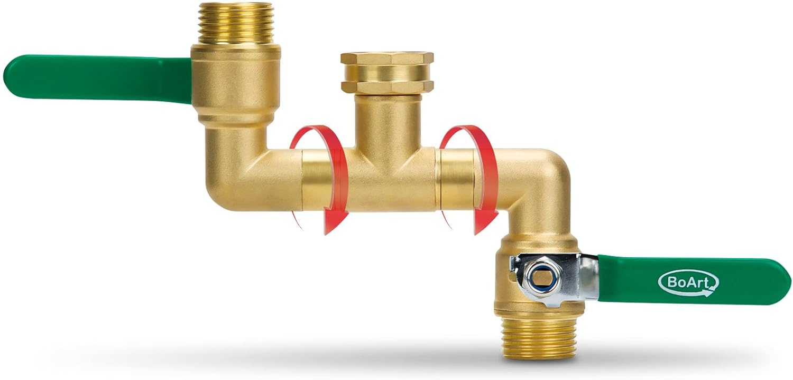
B0GRZTRQYK 2 Way Heavy Duty Brass Garden Hose Splitter, 360° Rotatable Y Valve, Fu...garden hose splitter · unknown · 1 pack
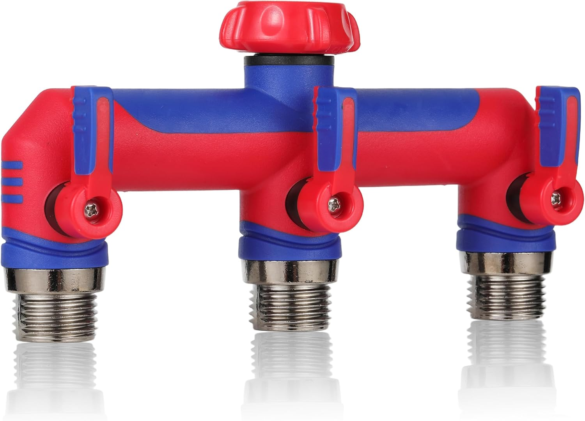
B0FB93GQWD 3 way Hose Splitter，Garden Hose Connector and Outdoor Faucet Splitter,w...3-way hose splitter · unknown · 1 pack
 B08NPL7KH4
DBR Tech® Heavy Duty 2 Way Hose Splitter (Premium Brass for Superior Du...
B08NPL7KH4
DBR Tech® Heavy Duty 2 Way Hose Splitter (Premium Brass for Superior Du...
2-way hose splitter · silicone · 1 pack
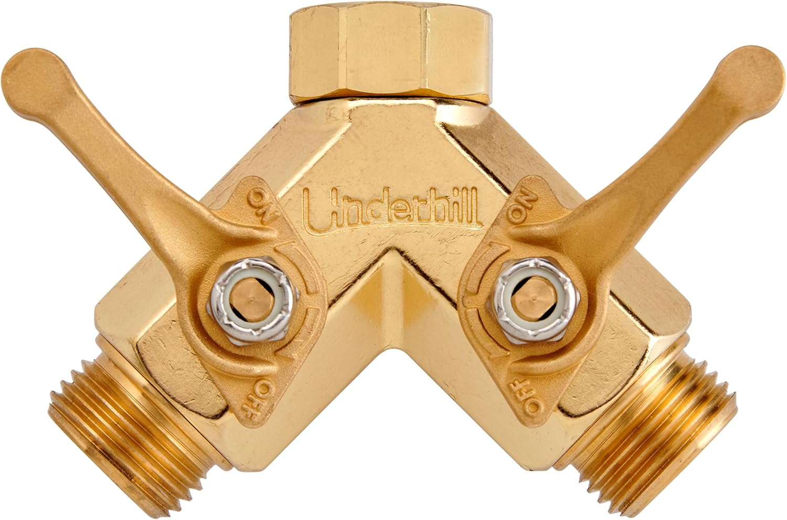
B0D1VP1FBX Underhill Garden Y Hose Splitter 2 Way, Heavy Duty Bib Faucet Spigot Co...2-way hose splitter · unknown · 1 pack
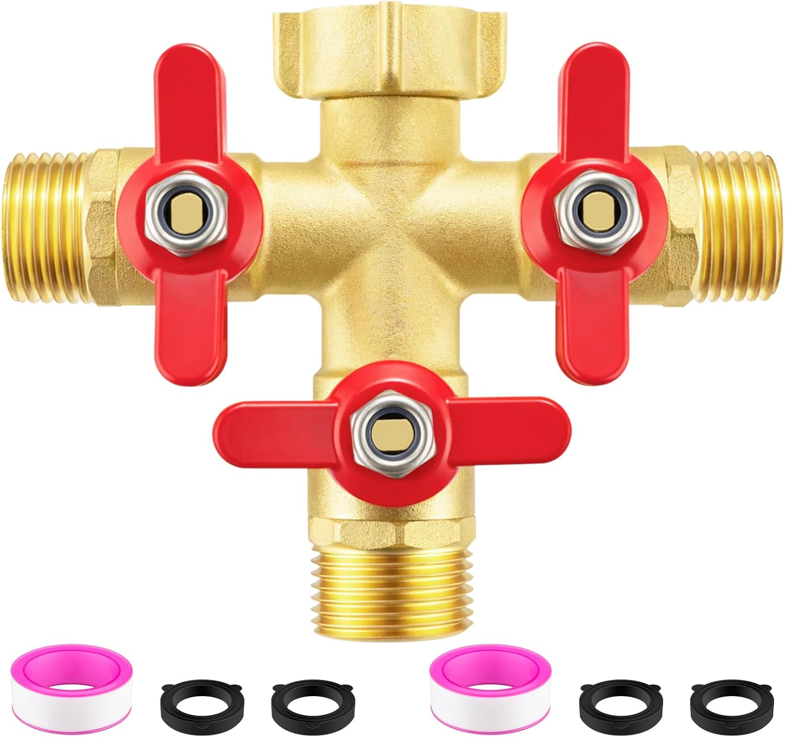
B0GJR28JNX 3 Way Garden Hose Splitter Heavy Duty Brass, Full Flow Outdoor Faucet H...garden hose splitter · unknown · 1 pack
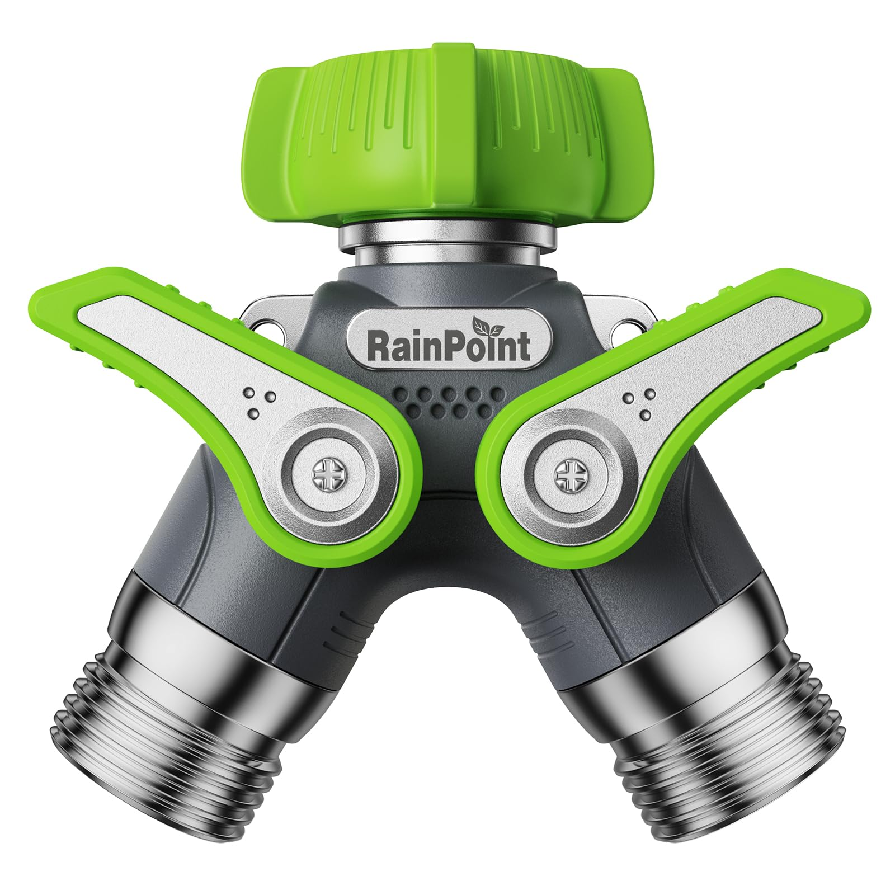
B0DRG5DC7J RAINPOINT Garden Hose Splitter, 2 Way Heavy Duty Water Hose Y Spigot Sp...garden hose splitter · plastic · 1 pack
 B083V1TVM3
Twinkle Star 4 Way Heavy Duty Brass Garden Hose Splitter, Hose Connecto...
B083V1TVM3
Twinkle Star 4 Way Heavy Duty Brass Garden Hose Splitter, Hose Connecto...
garden hose splitter · unknown · 1 pack
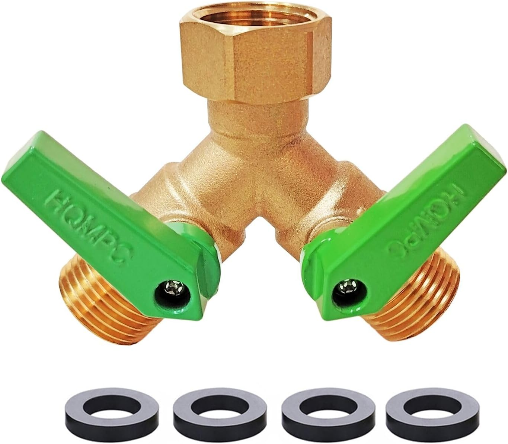
B0G42QRXBD HQMPC Garden Hose Y Valve Splitter With Metal Long Handle Brass Hose Sp...garden hose splitter · unknown · 1 pack
 B0DSJM6XY1
304 Stainless Steel 3 Way Hose Splitter Heavy Duty, Full Flow Garden Ho...
B0DSJM6XY1
304 Stainless Steel 3 Way Hose Splitter Heavy Duty, Full Flow Garden Ho...
3-way hose splitter · stainless steel · 1 pack
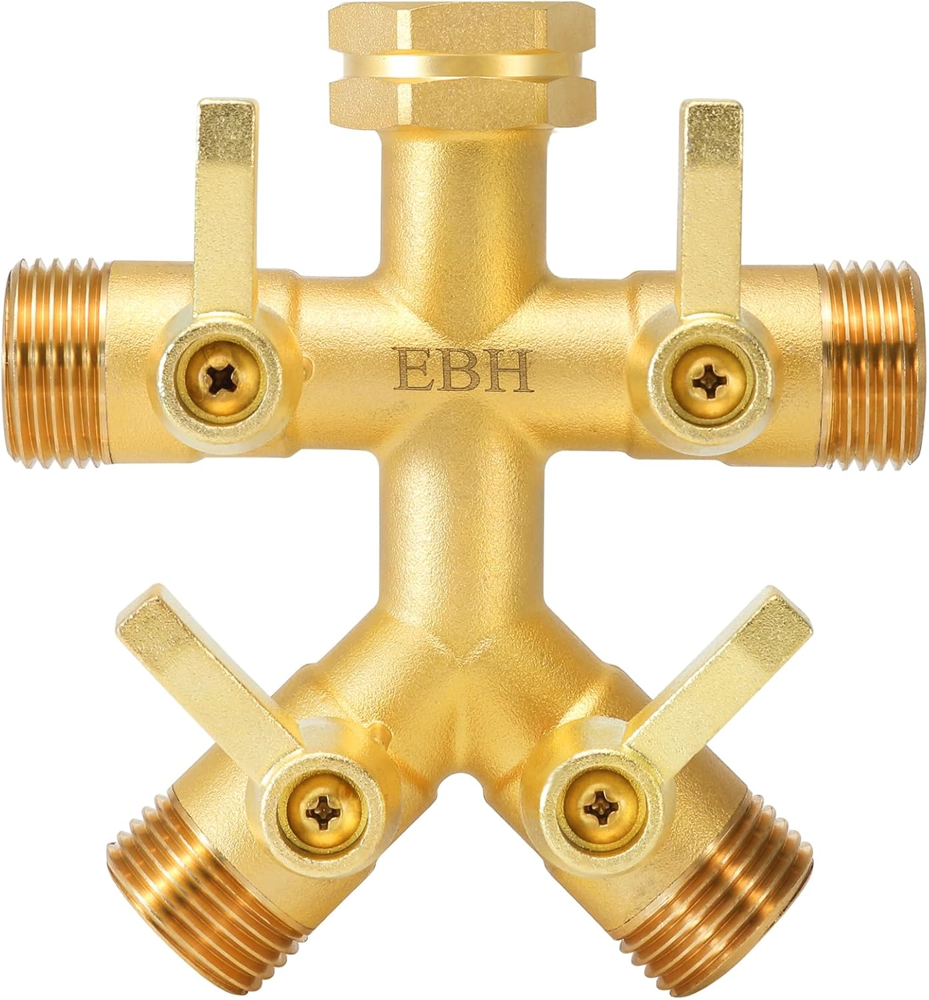
B0DN1ZLS4M EBH Brass Garden Hose Splitter Full Flow, Outdoor Faucet Heavy Duty Hos...2-way hose splitter · silicone · 1 pack
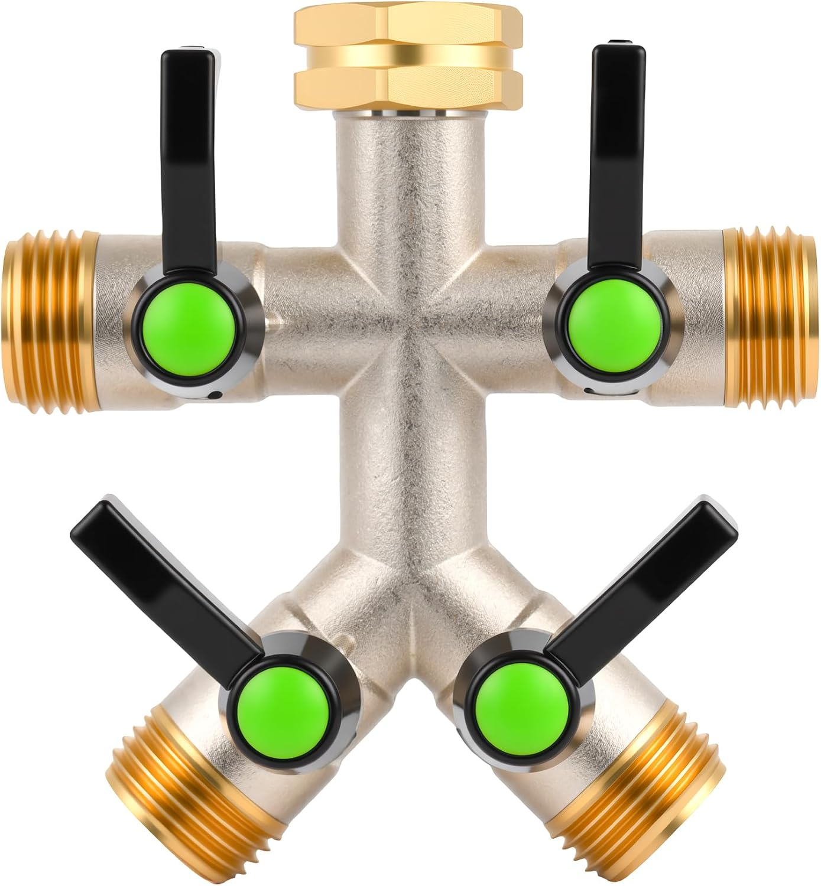
B0GJK9TTXW Love Is War 4 Way Hose Splitter, High-Flow Heavy Brass Garden Hose Spli...4-way hose splitter · plastic · 1 pack
garden hose splitter · unknown · 1 pack
 B0D98PNLQW
Garden Hose Splitter 2 Way Heavy Duty, Outdoor Faucet Splitter 2 Way, S...
B0D98PNLQW
Garden Hose Splitter 2 Way Heavy Duty, Outdoor Faucet Splitter 2 Way, S...
garden hose splitter · unknown · 1 pack
 B0G446B6NM
Hose Splitter Full Flow,CUMIZON Brass 2-Way Garden Hose Spliter, Heavy...
B0G446B6NM
Hose Splitter Full Flow,CUMIZON Brass 2-Way Garden Hose Spliter, Heavy...
garden hose splitter · unknown · 1 pack
garden hose splitter · plastic · 1 pack
garden hose splitter · stainless steel · 1 pack
garden hose splitter · unknown · 1 pack
garden hose splitter · stainless steel · 1 pack
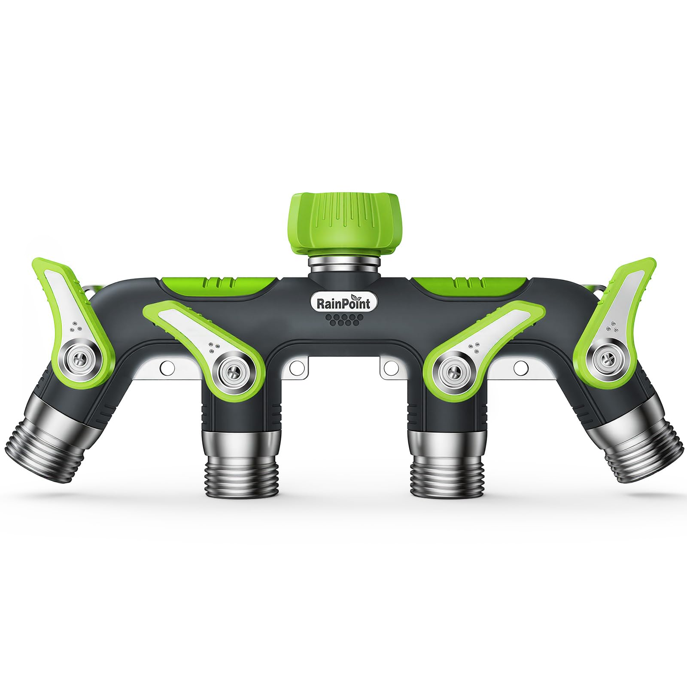
B0GGNG2T8T RAINPOINT 4 Way Garden Hose Splitter, 100% Metal Heavy Duty Water Hose...garden hose splitter · plastic · 1 pack
garden hose splitter · stainless steel · 1 pack
garden hose splitter · unknown · 1 pack